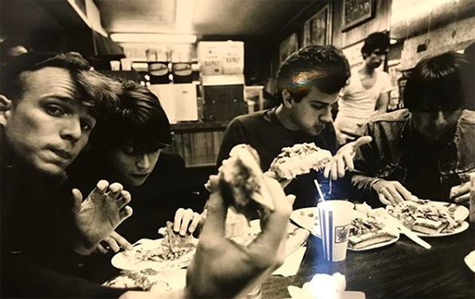

The three o' clock is an American alternative rock group originated in Los Angeles. Their music falls under the sub genre Paisley Undergrond, which lead singer and bassist Michael Quercio is credidet for naming. The group originally called The Salvation Army formed in 1981 with the original members Michal Quercio (lead vocalist, bass), John Blazing (Guitar) and Troy Howell (Drums). Today the lineup consists of Michael Quercio, Louis Gutierrez, Danny Benair and Adam Merrin.
The group would breakup in 1988, but rejoin with 3 out of 4 of the original members in 2013, when the opportunity came to play the very famous coachella festival. In the same period, they went on to make and appearance on the popular late night show "Conan" and release several archival recordings.